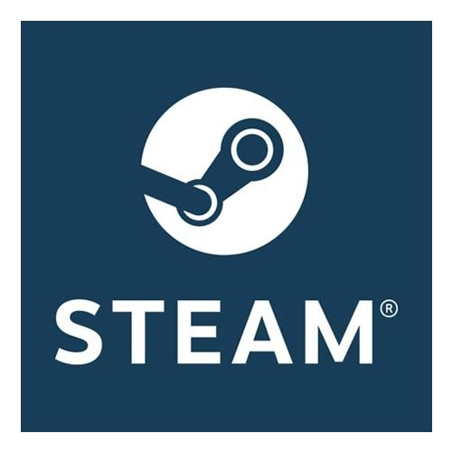

Steam
A Steam, criada pela renomada desenvolvedora de jogos Valve Corporation, é uma plataforma de distribuição digital e comunidade de jogos que revolucionou a forma como os gamers exploram, adquirem e compartilham experiências de jogo.
Epic

É uma plataforma de distribuição digital de jogos que trouxe uma nova dimensão à indústria de jogos eletrônicos. Desde o seu lançamento, a Epic Games Store se tornou um destaque no mundo dos videogames.
Nuvem
A Nuuvem é uma plataforma de distribuição digital de jogos que se destaca como uma das principais opções para jogadores na América Latina. Fundada em 2012, a Nuuvem rapidamente ganhou popularidade, oferecendo uma ampla variedade de títulos de jogos para PC e, mais tarde, expandindo para outras plataformas.